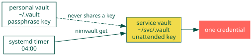

Service Vaults¶
Give an unattended machine the secrets it needs without giving it your whole vault, and without a person present to type a passphrase.
A service vault is an ordinary vault. It differs only in what it holds, who it is encrypted to, and the fact that nothing about it expects a human.
The problem¶
The personal vault is encrypted to a key with a passphrase, which is correct: it holds everything, and everything should cost a deliberate act to open. That same property makes it unusable from a service.
A backup timer that fires at 04:00 cannot answer a pinentry prompt. Priming an agent works until the cache expires or the host reboots, and then the timer fails quietly at 04:00 on some later morning. A backup that stops silently is worse than one that was never configured, because it still looks configured.
The shape¶

Two vaults, two recipients, two blast radii. The service vault holds only what its services need, so a key that can open it unattended can open nothing else.
Create one¶
nimvault resolves its vault from the working directory, so a second vault is a second directory. No flag, no mode, no new concept.
An unattended key¶
gpg --batch --pinentry-mode loopback --passphrase "" \
--quick-generate-key "services on $(hostname) <noreply@localhost>" \
default default never
The empty passphrase is the point. A key that needs no interaction is the only kind that survives a reboot at 04:00, and confining it to a handful of entries is what makes that acceptable.
The vault¶
mkdir -p ~/svc && cd ~/svc && git init
mkdir -p .vault
echo "recipient = <fingerprint of the unattended key>" > .vault/config
nimvault add ~/.config/some-service/token
nimvault seal
Use one¶
cd ~/svc && nimvault get ~/.config/some-service/token
get writes the plaintext to stdout and nothing else, so a service reads its
credential without the secret ever reaching disk. Use it in preference to
unseal: a service that needs one entry should not materialise the rest.
Where a file genuinely has to exist, name it:
nimvault unseal ~/.config/some-service/token
What belongs in one¶
Only what an unattended process actually reads. An IMAP password a sync timer needs, a token a backup ships with. Nothing a person uses interactively, and nothing whose loss would matter more than the convenience is worth.
Keep the repository passphrase of a backup out of the vault that backup writes to. Storing the key to an archive inside that archive, and then shipping both to third-party storage, leaves the encryption doing no work.
Why not just widen the personal vault¶
Because the recipient is the boundary. Adding an unattended key as a second recipient on the personal vault would let a passphraseless key on one machine decrypt every secret you own. The split exists so that compromise of the unattended key costs exactly the entries that key was given.